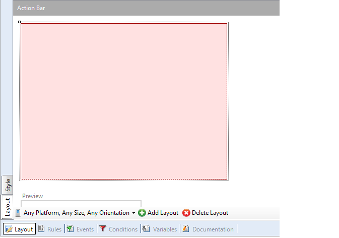

HowTo: Using SendSMS From Interop in Smart Devices Api
The Interop External Object which can be found under the folder Smart Devices Api provides several methods to interact with the device where the app is executing.
The SendSMS method enables you to open the SMS native application and to fill the message fields with the values taken from the parameters. The user will have to confirm the sending of the message to actually send it. This article will show an example of how this feature is used. Firstly, create a new Panel object (i.e.called SDPanel):  Add a variable based on the Phone domain, and a variable based on VarChar(200) to the SDPanel: Add the variable (right click/Insert Variable) to the Layout, and add a new Action to the Layout (right click/Insert Action)
Make sure the variable has the property Readonly = False On the event of the action add the following code:
Event 'Send'
Interop.SendSMS(&to, &ElMsg)
EndEvent
Done! The entry panel will accept a phone number and a msg and when the button Send is tapped the SMS native application will be invoked. With a new SMS with the values passed as paramaters already in it.
|


| Backlinks | |
| HowTo: Using SendMessage from Interop in Smart Devices | Interop external object |
| Key Color |